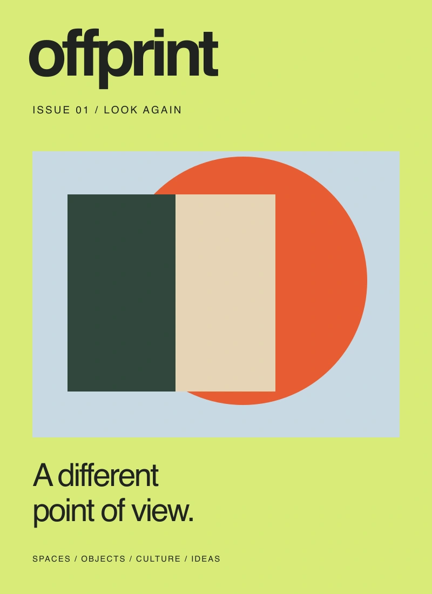

Print edition
A concept for a 64-page, soft-cover magazine. Six essays, original graphic studies, and generous room for the images.
- 170 × 240 mm concept format
- Uncoated paper direction
- Original cover illustration
$28

THE FIRST EDITION / 2026OFFPRINT / ISSUE 01
A collection about spaces, everyday objects, and the useful practice of looking again. Made to be read slowly, left open, and returned to.
All six essays are available in full on this website. The editions below demonstrate a publication shop; no physical or digital goods are sold or delivered.
Choose an edition ↓Read the stories online ↗Illustrative USD prices.
No payment or order submission.
A concept for a 64-page, soft-cover magazine. Six essays, original graphic studies, and generous room for the images.
A concept for a screen-friendly edition. The complete essays remain freely readable in the online archive.
The print and digital concepts together. An illustrative bundle for readers who like to keep a thought close.
INSIDE ISSUE 01
Offprint is a fictional editorial concept. Every essay and graphic illustration was created for this project. The publication specifications and prices are illustrative, and the selection bag is stored only in your browser. No checkout, shipping address, email, subscription or payment is collected.
Credits and image provenance ↗A DIFFERENT POINT OF VIEW